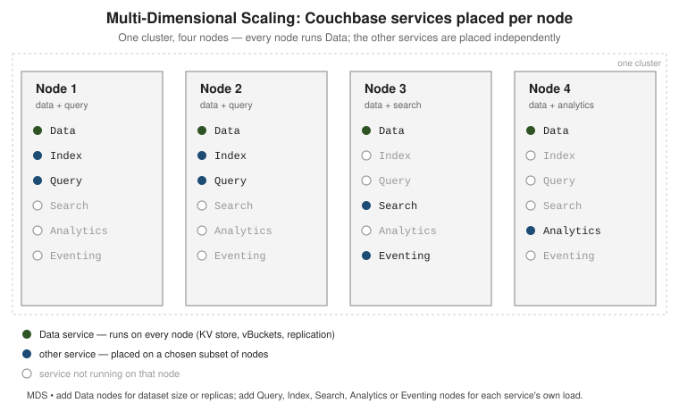

What Couchbase Server is & how to run it
|
This content was generated with the assistance of AI and should be verified against the official documentation before being relied on in production. |
Couchbase Server is a distributed database that keeps its working set in memory and stores each record as a JSON document addressed by a key. It is a document database and a key-value store at the same time: the same record can be fetched by key in microseconds or matched by a SQL-like query language (SQL++). This page explains the model and its trade-offs, the services that make up a node, and how to start one.
A distributed, memory-first document database
A Couchbase cluster is a set of identical nodes that share one configuration. Data lives in buckets, each partitioned into 1024 vBuckets spread evenly across the Data-service nodes, with a configurable number of replicas. Every document belongs to a collection inside a scope inside a bucket; Buckets, scopes & collections covers that hierarchy.
The tiers map onto the relational vocabulary, with one difference: a collection does not impose a single
column list on the documents it holds. A route document embeds its schedule as an array instead of
splitting it into a child table:
{
"type": "route",
"airline": "AA",
"sourceairport": "SFO",
"destinationairport": "JFK",
"stops": 0,
"schedule": [
{ "day": 1, "flight": "AA332", "utc": "14:41:00" },
{ "day": 2, "flight": "AA834", "utc": "09:05:00" }
]
}
Because a document carries its own structure, the same record can be read two ways:
# Key-value: fetch one document by its key, no query planning involved. cbc get route_10209 -U couchbase://localhost/travel-sample -u Administrator -P password \ --scope inventory --collection route # SQL++: match many documents by their content. SELECT a.name, a.callsign FROM `travel-sample`.inventory.airline a WHERE a.country = "United States" LIMIT 5;
The trade-offs that follow from this model:
-
Flexible schema. Two documents in one collection may carry different fields. Structure is real — it lives in the application, in indexes, and optionally in query predicates — but the database does not require you to declare it up front or migrate every record when it changes.
-
Horizontal scale. Add nodes and rebalance; vBuckets and their replicas redistribute automatically, so both dataset size and throughput scale out across commodity machines.
-
Memory-first latency. The Data service holds a working set in RAM and persists to disk asynchronously, so reads and writes that hit memory return in well under a millisecond, without a separate cache tier in front of the database.
For the relational baseline these points contrast with, see SQL Reference; for another document database’s take on the same ideas, see MongoDB Reference. For a narrative overview, read Introduction to Couchbase and Architecture Overview.
The services model and Multi-Dimensional Scaling
A Couchbase node runs one or more services, and each service can be placed on a different subset of nodes:
| Service | Responsibility |
|---|---|
Data |
The key-value store: vBuckets, replication, expiry, the sub-document API |
Query |
Executes SQL++ statements, using the Index and Data services |
Index |
Global secondary indexes (GSI) that the Query service reads |
Search |
Full-text search indexes and queries |
Analytics |
Ad-hoc analytical (columnar) queries over a shadow copy of the data (Enterprise Edition) |
Eventing |
Server-side functions triggered by data changes (Enterprise Edition) |
Backup |
Scheduled, incremental cluster backups (Enterprise Edition) |

Because the services are independent, you scale each one for its own bottleneck — add Data nodes for dataset size or replica count, add Query and Index nodes for query throughput, isolate Analytics so a heavy report cannot slow operational traffic. Couchbase calls this Multi-Dimensional Scaling (MDS).
# Add a node and give it only the Query and Index services. couchbase-cli server-add -c localhost:8091 -u Administrator -p password \ --server-add 10.0.0.5:8091 \ --server-add-username Administrator --server-add-password password \ --services query,index # Rebalance so the cluster starts placing indexes and routing queries to it. couchbase-cli rebalance -c localhost:8091 -u Administrator -p password
See Services and Indexes for what each service does and how to co-locate or separate them.
How a request travels through a node
The same cluster answers two very different kinds of request, and they take different paths. A key-value request goes straight to the Data service: the SDK hashes the key (CRC32) to one of the 1024 vBuckets, looks the vBucket up in the cluster map it downloaded at connect time, and sends the operation to the node that owns the active copy — no query planning, no index. A SQL++ request goes to any Query node over HTTP; that node plans the statement, asks the Index service for candidate keys, and fetches the matching documents from the Data service.
Two consequences follow from the picture. Index maintenance is asynchronous: the Index service learns about a mutation from the Data service’s change stream (DCP), so a query can by default see slightly stale index content unless it asks for a stronger scan consistency (covered in Indexing). And the key-value path is the only one that is read-your-writes by construction, which is why the other pages of this section keep returning to it.
Editions and how you run it
Enterprise, Community, and Capella
-
Enterprise Edition (EE) — free for development and testing, paid subscription for production. All seven services, plus rack-zone awareness, encryption at rest, X.509 authentication, and the Backup service.
-
Community Edition (CE) — a free, Apache-2.0-licensed build that trails EE by a release or two. Data, Query, Index and Search only; no Analytics, Eventing or Backup service, and fewer security options.
-
Capella — Couchbase’s fully managed database-as-a-service. It runs the same server on a cloud provider of your choice and adds provisioning, autoscaling, backups and monitoring, plus Capella-only App Services (Mobile sync) and Columnar. Capella-only capabilities are linked from these pages, not documented in depth.
Start a node
# Enterprise Edition, single node, via Docker. docker run -d --name db -p 8091-8096:8091-8096 -p 11210:11210 \ couchbase:enterprise # Open http://localhost:8091 and run "Setup New Cluster" in the Web Console, # or initialise the same cluster from the command line: couchbase-cli cluster-init -c localhost:8091 \ --cluster-username Administrator --cluster-password password \ --services data,query,index,fts \ --cluster-ramsize 1024 --cluster-index-ramsize 512
Native packages for Linux, macOS and Windows, and the Docker walk-through, are listed under
Install Couchbase Server. The
browser-based Web Console on port 8091 is the primary admin UI; the first-run walk-through is
Start Here. The docker run flags
used above are explained in Running Containers.
Query shells
# cbq -- the SQL++ command-line shell that ships with the server. cbq -e couchbase://localhost -u Administrator -p password cbq> SELECT "hello" AS greeting; # cbsh -- Couchbase Shell, a separate cross-platform shell with a # pipeline/scripting language layered over the same cluster. cbsh --connstr couchbase://localhost -u Administrator -p password > doc get route_10209 --bucket travel-sample
cbq is documented at the cbq-shell
reference; the standalone Couchbase Shell (cbsh) has its own documentation at
couchbase.sh.
Sample buckets
# Load the sample data sets used throughout these pages # (also offered as checkboxes in the Web Console setup wizard). curl -u Administrator:password -X POST \ http://localhost:8091/sampleBuckets/install \ -d '["travel-sample","beer-sample"]'
travel-sample holds airlines, airports, routes, hotels and landmarks (plus scopes for agency bookings);
beer-sample holds breweries and beers. See
Sample
Buckets.
Hands-on: a single node and the shop dataset
The rest of this section uses one small running example: an online shop. It lives in a bucket called shop,
in a scope called sales, with four collections — customers, products, orders (each order embeds its
lines) and categories (a tree used for recursive queries). The commands below were run against a
Couchbase Server 7.6.2 Enterprise container; every result shown is real output, trimmed for length. Use any
free host ports if the standard ones are taken — only the container-internal ports matter to the
commands run with docker exec.
Start the node and initialise a single-node cluster running the Data, Query and Index services:
docker run -d --name couchbase-shop -p 8091-8094:8091-8094 -p 11210:11210 couchbase:enterprise-7.6.2 docker exec couchbase-shop couchbase-cli cluster-init -c localhost:8091 \ --cluster-username Administrator --cluster-password password \ --services data,query,index \ --cluster-ramsize 512 --cluster-index-ramsize 256 --index-storage-setting default # SUCCESS: Cluster initialized docker exec couchbase-shop couchbase-cli server-list -c localhost:8091 -u Administrator -p password # ns_1@cb.local [::1]:8091 healthy active
A node is ready when the cluster-init call succeeds; there is no separate "start the database" step. Now create the bucket and the keyspace. A bucket with no replicas fits a single node, because replicas always live on other nodes; with one node there is nowhere to put them. The consequence is that a single-node bucket has no copy to survive the loss of that node — fine for development, never for production.
docker exec couchbase-shop couchbase-cli bucket-create -c localhost:8091 -u Administrator -p password \
--bucket shop --bucket-type couchbase --bucket-ramsize 200 --bucket-replica 0 \
--durability-min-level none --enable-flush 1
# SUCCESS: Bucket created
docker exec couchbase-shop couchbase-cli collection-manage -c localhost:8091 -u Administrator -p password \
--bucket shop --create-scope sales
for c in customers products orders categories; do
docker exec couchbase-shop couchbase-cli collection-manage -c localhost:8091 \
-u Administrator -p password --bucket shop --create-collection sales.$c
done
docker exec couchbase-shop couchbase-cli collection-manage -c localhost:8091 -u Administrator -p password \
--bucket shop --list-scopes
# sales
# _default
# _system
Load a few documents with SQL++ through the Query REST endpoint (the same /query/service that cbq and every
SDK call). UPSERT takes a key and a value; the keys follow the type::id pattern that
Documents, keys, metadata & expiration explains.
curl -s -u Administrator:password http://localhost:8093/query/service --data-urlencode 'statement=
UPSERT INTO shop.sales.customers (KEY, VALUE) VALUES
("customer::c-1", {"type":"customer","name":"Ada Lovelace","email":"ada@example.com",
"city":"London","tier":"gold"}),
("customer::c-2", {"type":"customer","name":"Alan Turing","email":"alan@example.com",
"city":"Manchester","tier":"silver"})'
# "status": "success", "metrics": { ... "mutationCount": 2 ... }
A full dataset script (five customers, five products, seven orders and a category tree) is built up page by page
in the pages that follow. For bulk loading from files, cbimport reads JSON lines, a JSON list, CSV or a
directory of documents and builds the keys from a template:
# cust.jsonl holds one JSON object per line docker exec couchbase-shop cbimport json -c couchbase://localhost -u Administrator -p password \ -b shop --scope-collection-exp sales.customers -d file:///tmp/cust.jsonl -f lines -g 'customer::%id%' # JSON `/tmp/cust.jsonl` imported to `couchbase://localhost` successfully # Documents imported: 2 Documents failed: 0
Finally, read the same record both ways. The key-value read needs the scope and collection spelled out
because cbc otherwise targets the default collection:
docker exec couchbase-shop cbc get customer::c-1 -U couchbase://localhost/shop -u Administrator -P password \
--scope sales --collection customers
# customer::c-1 CAS=0x18e6b28223f20000, Flags=0x0, Size=115, Datatype=0x01(JSON)
# {"city":"London","email":"ada@example.com","name":"Ada Lovelace","schemaVersion":2,"tier":"gold","type":"customer"}
Datatype=0x01(JSON) is the server’s own record that the value is JSON (see
the metadata table), and CAS is the
token that optimistic locking compares. The SQL++ read of the same data runs through the Query service:
SELECT RAW c.name FROM shop.sales.customers c WHERE c.tier = "gold" ORDER BY c.name; -- ["Ada Lovelace", "Grace Hopper"]
On a keyspace with no index at all, Couchbase Server 7.6 still answers: the planner falls back to a
sequential scan, which streams every key of the collection straight from the Data service (the same
mechanism as the KV range scan) and then filters in the Query service. EXPLAIN shows it as a PrimaryScan3
whose index is #sequentialscan. Older servers refused such a statement with error 4000, "No index available on
keyspace", and that message is still what you meet when sequential scans are not available to the user:
EXPLAIN SELECT c.name FROM shop.sales.noindex c WHERE c.tier = "gold"; -- operators: PrimaryScan3 (index "#sequentialscan") -> Fetch -> Filter -> InitialProject
A sequential scan is a convenience for development and small collections, not a plan to ship: its cost grows
with the size of the keyspace, exactly like a primary scan. Once a secondary index on tier exists, the same
statement plans an IndexScan3 on it instead. Indexes, not the query text, decide how fast a Couchbase query
is, and designing them is the subject of Indexing with the Index
service. The sample buckets (travel-sample, beer-sample) ship with primary indexes so that the
documentation examples run immediately; your own buckets do not.
Ports a node listens on
| Port | Purpose |
|---|---|
8091 / 18091 |
Cluster manager: Web Console, REST API and |
8092 |
Views and XDCR (CAPI) REST |
8093 / 18093 |
Query service REST |
8094 / 18094 |
Search service REST |
8095 / 18095 |
Analytics service REST |
8096 / 18096 |
Eventing service REST |
11210 / 11207 |
Data service, key-value protocol (TLS on 11207) |
When a node sits behind Docker port mapping or a NAT, an SDK that connects to the mapped address still receives
the node’s internal addresses in the cluster map and cannot reach them. Configure an alternate address for the
node (couchbase-cli setting-alternate-address --set) so the SDK switches to the external network, or run the
client inside the same Docker network.
What Couchbase is not
# "Not just a cache": a write can be required to reach a majority of
# replicas, and disk, before it is acknowledged.
cbc create order:99 -V '{"total": 42}' \
--durability persist_to_majority --scope sales --collection orders \
-U couchbase://localhost/shop -u Administrator -P password
# https://docs.couchbase.com/server/current/learn/data/durability.html
-
Not only a cache. The Memcached bucket type and the memory-first design invite the comparison, but Couchbase and Ephemeral buckets replicate, and Couchbase buckets persist to disk and support synchronous-replication durability. It is a system of record, not a volatile layer in front of one.
-
Not "schemaless" in the anything-goes sense. Every document is JSON within the 20 MiB value limit, a key is unique within its collection, and index and query semantics still assume shapes your application controls. What is flexible is that the schema is not declared centrally, not that anything goes.
-
Not a drop-in SQL RDBMS. SQL++ is SQL-like but runs over nested, heterogeneous JSON. There are no cross-document foreign keys, joins are not the default access path, and multi-document transactions are a deliberate choice rather than the norm. Porting a normalized relational schema unchanged usually works against the model.
Reading older Couchbase material
Books and blog posts from the 2.x to 4.x era describe a Couchbase that differs from the current server in ways that matter when following them:
-
No scopes or collections. Everything lived in the bucket, usually the
defaultbucket, and atypefield separated entities. Today that bucket’s content lives in the_defaultcollection and a collection per entity is the better design. -
Views were the secondary-access mechanism. N1QL arrived in 4.0 and the Index and Query services are the current route; see Indexing and legacy Views.
-
Three bucket types with Moxi. Memcached buckets were reached through the Moxi proxy; Moxi is gone and Memcached buckets are deprecated.
-
PersistTo/ReplicateToobserve polling has been superseded by server-side durable writes. -
Elasticsearch plug-in and XDCR-to-Elasticsearch have been replaced by the built-in Search service.
Continue with Buckets, scopes & collections.